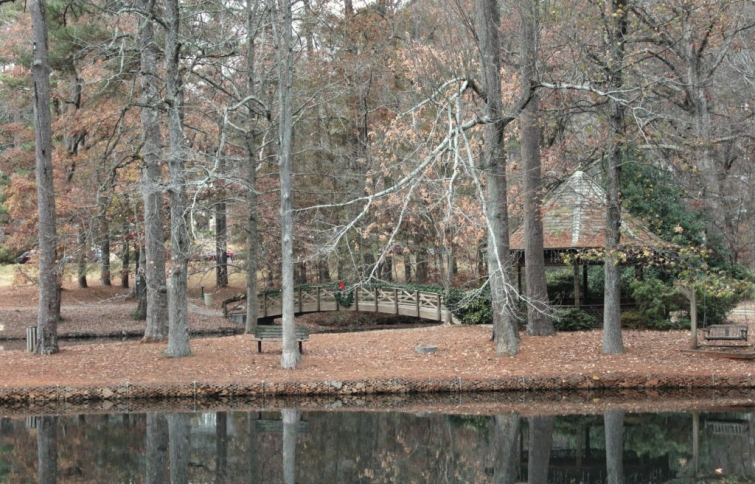
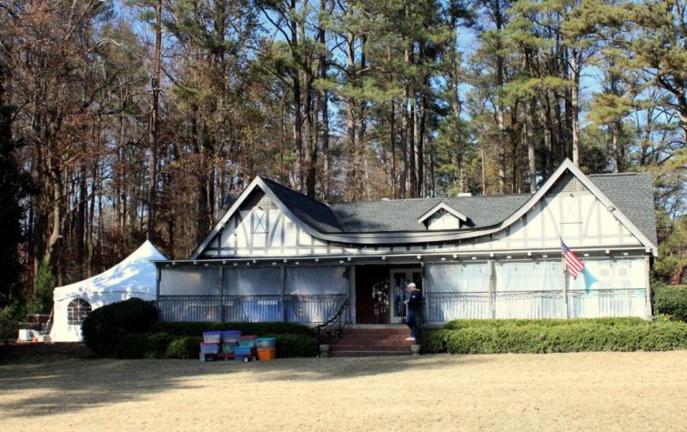

.png)
.PNG)
.PNG)
.PNG)
.PNG)
.PNG)
.JPG)
.JPG)
.PNG)
.PNG)


Happy week before Christmas!  I hope you are still in the mood for more Christmas decorating.  We were able to visit Mary Kay Andrews’ home because it was on the Avondale Estates Christmas Tour this year, but it wasn’t the only home on the tour.  Today, we are going to look at rooms from some of the other homes, but because I respect the privacy of these gracious homeowners, I am mixing up the photos and not connecting them to their respective exteriors.  I hope you understand my reasons for doing so in this crazy world of ours.

This was our first visit to the town of Avondale Estates, and I have to say I was most impressed!  Founded in the 1920’s, it is located near Decatur, Georgia (a place with some great restaurants!)  There is a lake, tennis courts, parks, a swimming pool, and a clubhouse (in the photo below) for all the residents.  The lovely commercial/downtown buildings were constructed in the Tudor style of architecture.  It reminded me of the area in Asheville, NC near the Biltmore Estate.  An interesting tidbit about Avondale Estates is that the very first Waffle House in the United States was built there, and the original building is now the Waffle House Museum!

Now about their Christmas tour.¬† This was the 24th year of this annual Christmas event, and to quote the brochure about it:¬† ‚ÄúThis year‚Äôs tour spanned almost 90 years beginning with two Avondale ‚Äúoriginals‚Äù built when the city was established in 1926, a forties bungalow, two recently renovated 50s bungalows, and a totally updated sixties two-story.‚Äù¬† If you did not want to walk or drive from house to house, a trolley was provided. A bonus to the tour was the Holiday Market held in the clubhouse.¬† There were food items, jewelry, Christmas decorations, handbags, scarves, and many other things for sale there…and musical groups performing Christmas carols! Mary Kay Andrews was also there, and you could purchase her books and have them autographed. All in all, a wonderful holiday event!
Now on to the photos!¬†There are a lot, so I am not going to put in much narration today. ¬†Just enjoy all the pictures. ¬†(I will say with this first group – the exteriors – I did include a couple of homes that weren’t on the tour because the entire neighborhood gets decked out for Christmas, and I thought some of them were just so pretty. üôÇ )
Okay I’ll be quiet now.
Enjoy….
The exteriors:


The living rooms…


The dining rooms:


 
The kitchens:
(Most of them were small.)


The bedrooms:


The bathrooms…
(I was really impressed with the quality in the bathroom renovations.)


 Loved the charming wallpaper in this bathroom!
Loved the charming wallpaper in this bathroom!


 and everything else! üôÇ
and everything else! üôÇ
A porch table…
 A decorated bicycle…
A decorated bicycle… A guest house behind one of the tour houses….
A guest house behind one of the tour houses…. And the interior of that guest house. üôÇ
And the interior of that guest house. üôÇ
And that’s all I have for you today. ¬†I hope you enjoyed seeing some of the other homes from the Avondale Estates Christmas tour. ¬†I will be back later in the week to continue the tour through the rooms decorated for Christmas here. ¬†Before I leave you on this rainy Monday morning, I wanted to let you know the winner of the Christmas books!
The winning comment came from this post:

That would be part 1 from the Mary Kay Andrews’ Home Tour posts.
The winning comment was this number:

And that comment was this one:

So congratulations to Sandy!  I will be contacting her soon to get all the books mailed to her.
I hope all of you have a great week in store with family and friends. üôÇ
Until next time…


.PNG)
Wonderful pictures and I imagine a wonderful tour. I was hoping you would post other pictures. I enjoyed seeing all of them.
Wonderful tour Kelly and beautiful homes! Just LOVE the colors in the home with the Delft tile around the fireplace! The white trim mixed with some natural wood is gorgeous and those light blue walls! Dreamy. If there is any way to share exactly what the trim color is I would be eternally grateful! üôÇ Merry Christmas
Thanks for this “bonus” tour of Avondale Estates. Loved the outsides as much as the insides, and had to pin a couple pictures!
I “think” we are almost ready for Christmas. Only things left to do are the last minute things that can’t be done early. I’m loving my pared down Christmas decor this year, and am sure I will love it when it’s time to put it all away!
Merry Christmas to you and your family!
And congratulations to Sandy on the win!
Kelly,
What a wonderful tour of homes! Your photos are so good.
Merry Christmas! Your blog ia so good.
DiAnne
And I agree with one of your other commenters – your posts have truly been a gift for us!
Fun, fun, fun!!! Got several ideas for my idea book. I missed the Christmas house tours here, so thanks for the opportunity to experience some vicariously!
I love how you did this post! Loved the Santa in the shower- that was a surprise, I laughed out loud!
Thank you for continuing this great tour! What gorgeous bathrooms! The Santa in the shower was a hoot and the balloons were a clever idea for a Christmas tour.
My daughter and I spent the morning at Emery’s school where the entire kindergarten made gingerbread houses in the cafeteria. Then I hurried home to prepare a party for the neighbors on our street. I got smart and had a simple menu of homemade cookies, peppermint ice cream and hot chocolate.
Kelly, thank you for all the great posts in 2016. It has been a great gift to me!
———————————————————————-
Thank you Katrina. How fun to do the gingerbread houses with Emery’s class! I sooo remember doing those with 1st graders when I was teaching! (The room always smelled of sugar on those days. üôÇ ) Your party menu sounded delicious…just what I would like for dinner every night! LOL
Hope your Christmas was a good one with all your family. Happy New Year!
Kelly
What a beautiful way to spend the day but the Santa in the shower would have scared the be-geez-us out of me. Merry Christmas
Hi Kelly. What a wonderful way to spend a day – such fun to see how others prepare for the holidays. Thank you!
I really enjoyed this tour. I have always wanted to live in a quaint small home like these on the tour. They are just so cozy and comfortable looking. The community of Avondale Estates looks like a great place to live!
Loved the tour and such pretty homes. ! I love seeing real homes that don’t look so staged. üòâ
Well, I declare! I am so excited about winning, Kelly. Thanks for these tours. We all love gathering ideas from others.
——————————————————————
Yay! I’m happy you saw the post before I emailed you. It is so much better to find out via a surprise! üôÇ Congratulations girl! Thank you for reading and following along with all the posts here.
Merry Christmas!
Kelly
What a fun tour! Loved the fireplace filled with rag balls. What a clever idea.
———————————————————————
I am so glad you enjoyed the tour! I thought the rag balls were a new and clever idea too.
Thanks for popping in here today Cindy! üôÇ
Kelly
Enjoyed the rest of the tour! Really good ideas and seeing real homes that are lived in. I chuckled when I saw a Santa in the glass shower and the snowball balloons in another! Now that is something you don’t see all the time! Well, so much for a cool down in Central FL! In the 80’s all week— but nice for the visitors getting out of the cold elsewhere! We still have not had the heat turned on — just paddle fans with windows and doors open. We are planning to grill on Christmas with steaks, potato bar and salad with some yummy desserts! Very tropical this year. Hope you get to come visit the parks– so beautiful this time of the year with soap bubble snowflakes!! üôÇ Merry Christmas week !! Enjoy!
——————————————————————–
Hope you have gotten well from all your latest medical things Louvina so you can really enjoy this holiday week! Wasn’t that Santa funny, and the balloons in the shower would be great for a New Year’s Eve party; don’t you think? It is c-c-c-cold here today, but our Disney daughter is right there with you in the mild weather. Grilling steaks sounds delicious (along with yummy desserts of course!) No plans to make it to the parks for Christmas….the crowds are just too much at this time of year…maybe next year though. üôÇ
Merry Christmas week to you too!
Kelly
Hi Kelly ~ Thanks for touring these beautiful homes in Avondale for us. I loved seeing them – the old architecture but renovated with stylish updates. I loved the unexpected Santa in the shower – I laughed out loud! Also really enjoyed all the beautiful and creative Christmas decor in these homes. Thanks for the bird’s eye view!! And Merry Christmas to you and your family!
——————————————————————
Thank you for following along with them Leila Jane! I just loved all the old architecture too. That Santa was hilarious! Glad you appreciated its humor. üôÇ Merry Christmas to you and your family too.
Kelly
HI Kelly..I grew up in Atlanta in the 40s and 50s. We would all pile in the car
and drive to Avondale Estates to look at their Christmas Lights. It was magical then. Thank you for the lovely home tour. It was fun to be back in Avondale for a Christmas visit…Judy
—————————————————————–
Oh my goodness Judy! How fun that must have been! I am so glad you were able to “visit” Avondale thru the posts. Merry Christmas!
Kelly
Beautiful homes! All the rooms are so cozy and inviting!
Shelley
——————————————————————–
Yes they were, and the fire in some of the fireplaces made it even more so. Thank you for visiting the post here today!
Kelly
Thank you Kelly for sharing the home tour. You capture some very nice points — and things to give me ideas in future renovation — loved those built-in bookcases & the sunroom. Lovely accents, and collections — & ways to use them in d√©cor!
——————————————————————–
You are quite welcome Kristy! Those built-ins in so many of the homes were just wonderful. Wish more homes today had them! And I am glad you could find ideas to use in the future from the post.
Thank you for reading and taking the time to comment today. üôÇ
Kelly
Hi Kelly,
I grew up in Avondale Estates. It was and is a wonderful place.
I was out of town the Sunday of the Tour this year and I’m so glad that you captured pictures of the lovely homes. Thanks for a wonderful series of posts! ~Anne
——————————————————————-
You were lucky to grow up in such a charming place, Anne. I hate you missed the tour this year, but I hope you see it next year. Thank you for reading all the posts from it. Avondale Estates looks like a wonderful place to live!
Kelly